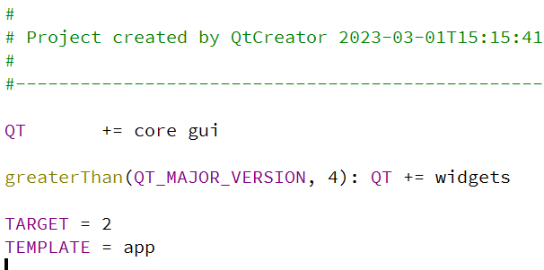
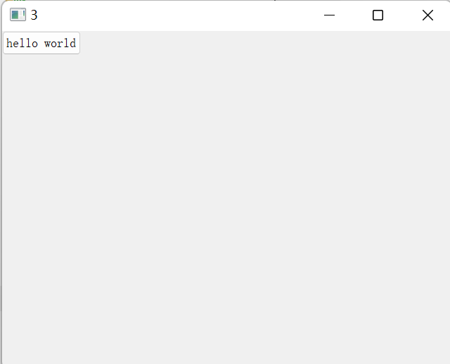
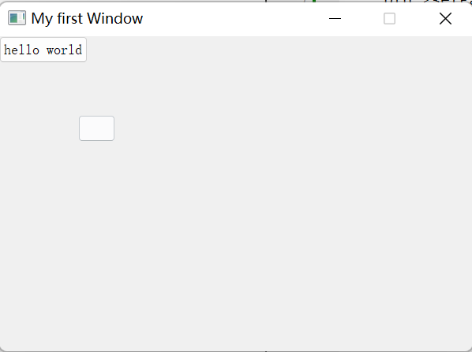
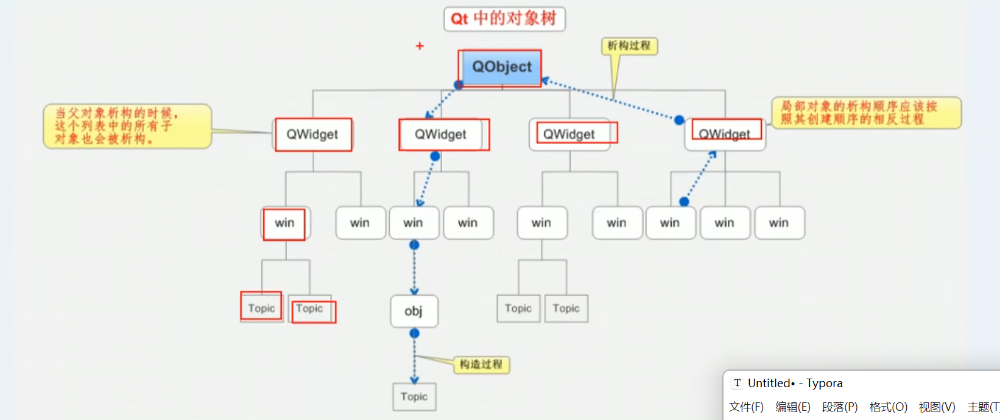
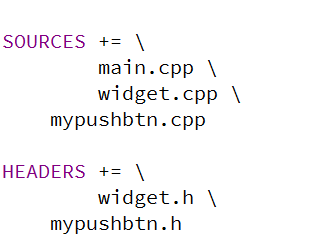
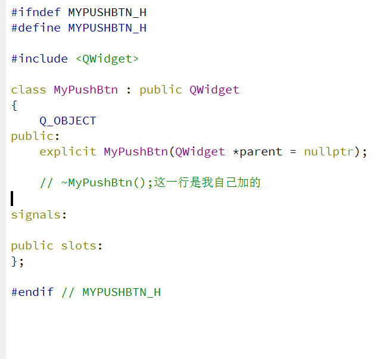
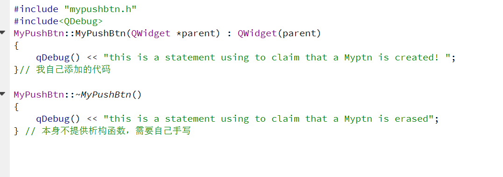
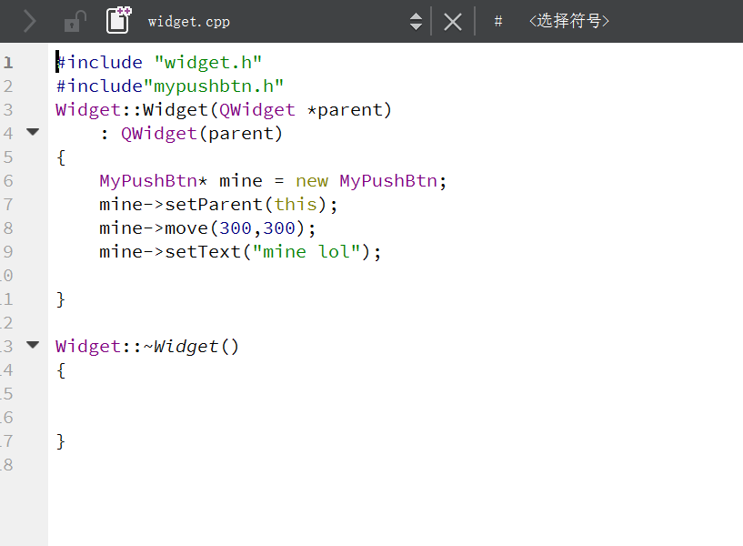

QT NEW (2)
QT开发_NEW2
创建一个按钮
我们查询帮助文档，得到这些信息
QPushButton Class
The QPushButton widget provides a command button. More...
Header:
#include <QPushButton>
qmake:
QT += widgets
Inherits:
QAbstractButton
Inherited By:
QCommandLinkButton 当然要留意是什么模块，如果 pro 文件里没有，那需要我们手动添加，在

的QT += 处 添加模块。
当然可以看看函数的功能
QPushButton(QWidget *parent = Q_NULLPTR)
QPushButton(const QString &text, QWidget *parent = Q_NULLPTR)
QPushButton(const QIcon &icon, const QString &text, QWidget *parent = Q_NULLPTR)
~QPushButton()
bool
autoDefault() const
bool
isDefault() const
bool
isFlat() const
QMenu *
menu() const
void
setAutoDefault(bool)
void
setDefault(bool)
void
setFlat(bool)
void
setMenu(QMenu *menu) 于是可以在 widget.cpp 中书写如下代码：
#include "widget.h"
#include<QPushButton>
Widget::Widget(QWidget *parent)
: QWidget(parent)
{
QPushButton* btn = new QPushButton;
btn->setParent(this); // 需要设置窗口对象作为对象书的叶子节点
btn->setText("hello world");
}
Widget::~Widget()
{
}

如果我们重新设置一下窗口大小，那就
resize(int Height,int Width); 但是如果我们直接创建第二个按钮，那就会覆盖第一个，那怎么办？使用 move 方法！
btn->move(int x_pos,int y_pos) 当然啊，我们可以设置窗口的名字：
setWindowTitle("My first windows") 以及可以固定窗口大小：
setFixedSize(int Height,int Width)
#include "widget.h"
#include<QPushButton>
Widget::Widget(QWidget *parent)
: QWidget(parent)
{
QPushButton* btn = new QPushButton;
btn->setParent(this); // 需要设置窗口对象作为对象书的叶子节点
btn->setText("hello world");
QPushButton* btn2 = new QPushButton;
btn2->setParent(this); // 需要设置窗口对象作为对象书的叶子节点
btn2->move(100,100);
setWindowTitle("My first Window");
resize(600,400);
setFixedSize(600,400);
}
Widget::~Widget()
{
}
QT对象树
我们发现，程序结束后，不需要一个一个手动的释放对象，这是因为，我们调用构造函数指定了一个Parent父对象，其父对象会把我们自己搞的子对象挂到对象树上，

（补充：一个类创建时需要调用一个函数来构造初始化这个类，这叫构造函数。当类的什么周期结束时需要调用一个删除函数，释放类占用的空间，这叫析构函数。类默认有这两个函数）于是在QT中只要指定好父对象就会帮助管理！不需要我们手动释放，很是方便
现在，我们来创建一个新类：MyPushBtn
右键工程-> 添加新文件->C++ Class ->选择 QWedget就好了。
随后，就发现多了一些文件

pro文件下多了我们自己定义的类的cpp文件和头文件


现在我们调一下自己写的：

可以看到我们自己的按钮产生了！
QT 坐标系
QT的坐标原点在窗口的最左上角，这是值得注意的一点，同时：X向右增大，向左减小，而Y 向下增大，向上减小。对于嵌套窗口，则是以父窗口为例子的！